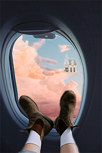
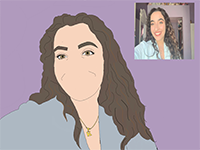
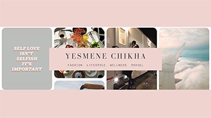
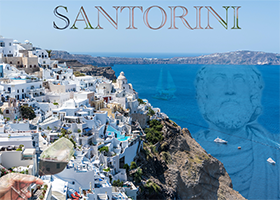

• Digital Media / Social Media Marketing
• Web Page Design
• Adobe Photoshop, Illustrator,Audition,Premiere
• Graphic Design and Word Processing (Adobe and Microsoft)
Social Media
Work Samples

3183 Tobago ct Apopka, FL 32703 ● (754)777-3319 ● Yesmene10@live.seminolestate.edu


